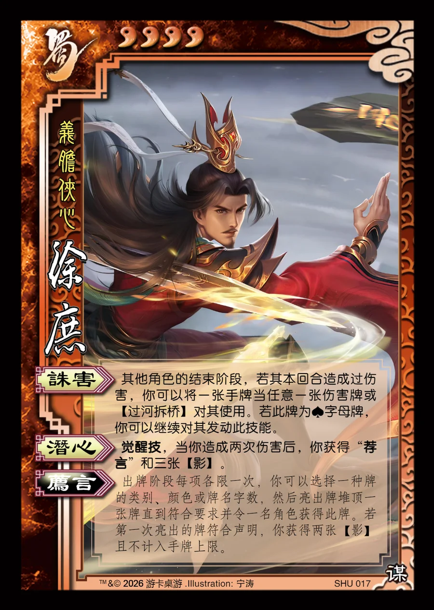

点击卡面查看大图
蜀
徐庶
♥4义胆侠心
诛害
其他角色的结束阶段，若其本回合造成过伤害，你可以将一张手牌当任意一张伤害牌或【过河拆桥】对其使用。若此牌为♠字母牌，你可以继续对其发动此技能。
潜心觉醒技
觉醒技，当你造成两次伤害后，你获得“荐言”和三张【影】。
荐言衍生
出牌阶段每项各限一次，你可以选择一种牌的类别、颜色或牌名字数，然后亮出牌堆顶一张牌直到符合要求并令一名角色获得此牌。若第一次亮出的牌符合声明，你获得两张【影】且不计入手牌上限。